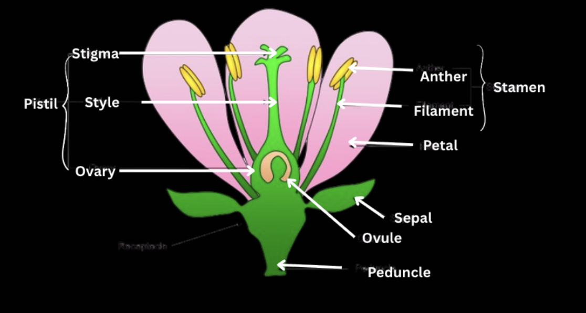

Introduction
- Plants can reproduce sexually and asexually.
- Sexual reproduction involves the fusion of games (sperm + egg).
- Asexual reproduction (also known as vegetative propagation) produces offspring from parts of the plant that are genetically identical to the parent.
Reproductive Plant Anatomy
- Male parts: Stamen contains anther and filament. The anther contains pollen grains, which produce male gametes.
- Female parts: Pistil (carpel) consists of the stigma, style, and ovary. The ovary contains ovules, producing female gametes.

Mechanisms of Sexual Reproduction
- Pollination transfers pollen from the anther to the stigma.
- Fertilization is the fusion of the gametes, leading to the formation of a zygote.
- Seed and Fruit Development → after fertilization, ovule into a seed, ovary develops into a fruit.
- Fruit is important for dispersion of seeds. When animals ingest fruit, the seeds are excreted and relocated.
Mechanisms of Sexual reprodictiom
- NO involvement of seeds. Plants are reproduced from other parts of the plant (leaves, stems, or roots)
- Types: binary fission (single cell splitting into two identical ones, like bacteria), budding (outgrowth or bud), fragmentation (fragment can develop a new individual), vegetative propagation (growing from vegetative parts), spore formation (in fungi), and parthenogenesis (develops from unfertilized egg cell, only requires female).
Written by Josephine Ankomah